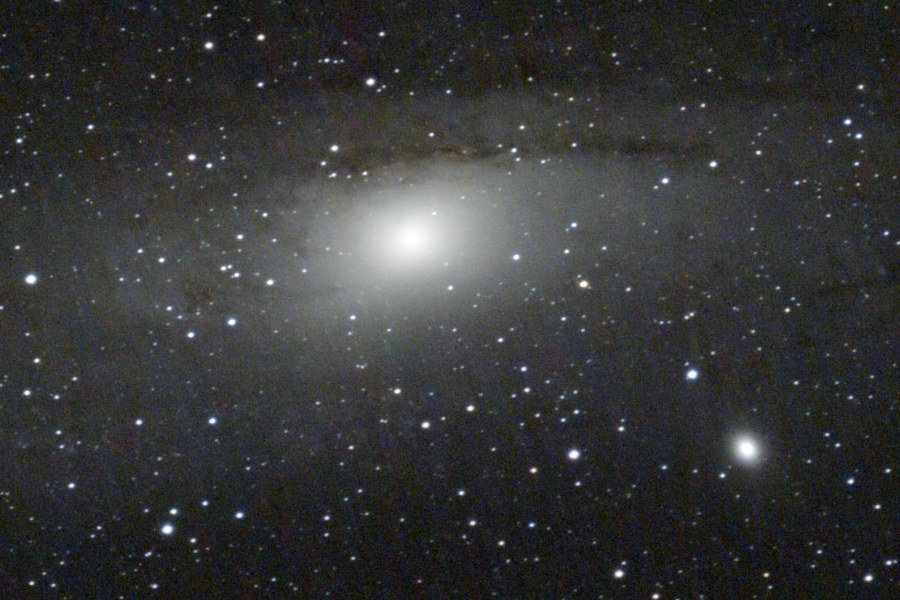
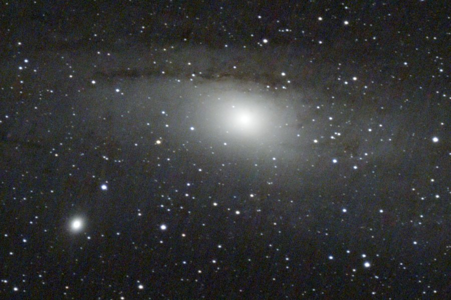

How it works · part 2 of 2
From hundreds of frames to one picture
A single 30-second frame of the Veil Nebula is mostly noise with a faint smudge in it. The picture at the top of this site is about 140 of those frames, combined and processed with no human touching a slider.
Why stack at all?
Faint nebulae give off very little light, and every frame carries random noise. Averaging many frames keeps the signal and cancels the noise: four times the frames gives roughly twice the clarity. That's why the plans run for hours on one target, and why nights can be combined.
Where the work happens
The telescope streams every frame over Wi-Fi to the home server the moment it's taken, so nothing is stored on the scope. Processing a session is heavy, so it runs on the office PC (an 8-core Ryzen) inside a Linux container nicknamed astromech. It checks for finished sessions every two minutes and takes about 8–9 minutes per session. The same job took 46 minutes on the home server.
The pipeline
- Check and label the frames. Skip any half-written or corrupt files and tag each frame with the camera's real colour pattern.
- Calibrate. Subtract a master dark frame (shots taken with the shutter closed at the same exposure and gain) to remove the sensor's own glow and hot pixels, then turn the raw colour mosaic into colour images.
- Align. Find the stars in every frame and line them all up on one reference. Frames that can't be aligned, such as those spoiled by passing cloud, are dropped.
- Stack. Average the aligned frames, rejecting outliers like satellite trails and aircraft.
- Colour calibration. Plate-solve the stacked image, look up the catalogued colours of the stars in it and set the white balance from them, so star colours are measured rather than guessed.
- Remove gradients. An AI model (GraXpert) removes the glow from streetlights and the sky itself, which is never perfectly even from a garden.
- Reduce noise. A second GraXpert AI pass smooths the remaining noise.
- Stretch and finish. The data is mostly very dark, so it is brightened gently and non-linearly, with a mask that keeps the background calm while the nebula comes up. The image is then rotated so north is up.
- Deliver. Finished pictures are sent to my phone by Telegram, preview first and then the full-resolution file.
Two colour palettes from one filter
The S30 Pro's dual-band filter passes two narrow slices of light: hydrogen-alpha at 656.3 nm, deep red, and oxygen-III at 500.7 nm, blue-green. The camera's red pixels mostly see the hydrogen and its green and blue pixels mostly see the oxygen. So for emission nebulae the pipeline produces a natural-colour version and a HOO version, which maps hydrogen to red and oxygen to teal. That's where the Veil's red and teal filaments come from. The thin coloured line under the site header marks those two wavelengths, to scale.


Some of these fields sit in the Milky Way and are packed with stars. A third version separates the stars from the nebula, shrinks the stars and puts them back more faintly, so the gas isn't swamped.
Gentle beats dramatic
The first Andromeda picture used strong local contrast and saturation, and it looked noisy. My verdict was "noisy as hell, the previous one looked better", and that was right. The main output is now the gentle version, with the dramatic one kept only as an extra.


Combining nights
Each night is processed on its own first, so I see results the next morning. Nights on the same target can then be combined. Each night is calibrated with its own dark frames, which matters because exposures differ from night to night, then every frame from every night is aligned and stacked together, with cleaner frames counting for more.
The Sun: lucky imaging
The Sun needs a different recipe. There are no stars to align on and plenty of light, so each frame is a few milliseconds long and the problem is the air, not noise. Each 40-frame burst is scored for sharpness and only the best 40% are kept, a technique called lucky imaging. On a tripod rather than the wedge, the picture also slowly rotates through the afternoon, by about 9° an hour on 13 October. Each frame is turned back by its own calculated angle, so the Sun's north pole points up, before the frames are aligned on the disc and stacked. The camera's colour grid is evened out first, so the stack keeps the sensor's full resolution. The final image matched NASA's SDO picture from the same day spot for spot.
What's next
- A proper AI star-removal tool and AI sharpening, both free.
- Spectrophotometric colour calibration, which uses each star's measured spectrum and the camera's real filter curves.
- Drizzle integration, which uses the dither nudges to rebuild detail at twice the resolution for prints.
- A trial of PixInsight, the standard professional-grade tool, with BlurXTerminator for deconvolution.
Results will be posted here with before-and-after comparisons.